건축기사 (2012-09-15 기출문제)
1과목: 건축계획
1. 다음 중 연면적에 대한 숙박부분의 비율이 가장 높은 호텔은?
- 커머셜 호텔
- 리조트 호텔
- 레지덴셜 호텔
- 아파트먼트 호텔
(정답률: 87%)

2. 학교운영방식 중 종합교실형에 관한 설명으로 옳지 않은 것은?
- 교실의 이용율이 높다.
- 교실의 순수율이 높다.
- 초등학교 저학년에 적합한 형식이다.
- 학생의 이동을 최소한으로 할 수 있다.
(정답률: 89%)
3. 주거단지 내의 공동시설에 관한 설명으로 옳지 않은 것은?
- 중심을 형성할 수 있는 곳에 설치한다.
- 이용 빈도가 높은 건물은 이용거리를 길게 한다.
- 확장 또는 증설을 위한 용지를 확보하는 것이 좋다.
- 이용성, 기능상의 인접성, 토지이용의 효율성에 따라 인접하여 배치한다.
(정답률: 91%)
4. 주택의 부엌에서 작업 순서에 맞는 작업대 배열로 알맞은 것은?
- 냉장고-개수대-조리대-가열대
- 개수대-조리대-냉장고-가열대
- 냉장고-조리대-개수대-가열대
- 개수대-냉장고-조리대-가열대
(정답률: 88%)
5. 전시실의 순회형식에 관한 설명으로 옳지 않은 것은?
- 연속순로 형식은 소규모의 전시실에 이용하면 적은 대지 면적에서도 가능하고 편리하다.
- 중앙홀 형식은 중심부에 큰 홀을 두고 그 주위에 각 전시실이 배치되어 있다.
- 연속순로 형식은 많은 실을 순서별로 통하여야 하는 불편이 있다.
- 갤러리 및 코리더 형식은 각 실을 독립적으로 폐쇄할 수 없다는 단점이 있다.
(정답률: 85%)
6. 르 꼬르뷔지에가 주장한 근대건축 5원칙에 속하지 않는 것은?
- 필로티
- 옥상정원
- 유기적 공간
- 자유로운 평면
(정답률: 76%)
7. 다음 중 시티 호텔에 속하지 않는 것은?
- 부두 호텔
- 클럽 하우스
- 커머셜 호텔
- 아파트먼트 호텔
(정답률: 73%)
8. 아파트의 형식 중 메조넷형에 관한 설명으로 옳지 않은 것은?
- 다양한 평면 구성이 가능하다.
- 소규모 주택에 적용시 경제적이다.
- 통로가 없는 층은 통풍 및 채광 확보가 용이하다.
- 트리플렉스형은 하나의 주거단위가 3층형으로 구성된 형식이다.
(정답률: 84%)
9. 고층 사무소 건축에 관한 설명으로 옳지 않은 것은?
- 외장재는 경량재가 좋다.
- 고층화할 경우 토지이용율이 높아진다.
- 층고를 낮게 할 경우 건축비를 절감시킬 수 있다.
- 승강기는 이용하기 편하도록 여러 곳에 분산하는 것이 좋다.
(정답률: 88%)
10. 상점건축에서 쇼윈도의 반사방지를 위한 방법으로 옳지 않은 것은?
- 2중 유리를 사용한다.
- 쇼윈도를 경사지게 하거나 곡면유리로 처리한다.
- 차양을 설치하여 쇼윈도 외부에 그늘을 조성한다.
- 인공조명을 사용하여 쇼윈도 내부의 조도를 외부보다 높게 처리한다.
(정답률: 58%)
11. 병원건축형식 중 분관식(Pavillion type)에 관한 설명으로 옳은 것은?
- 급수, 난방 등의 배관 길이가 짧다.
- 대지가 협소할 경우 적용이 용이하다.
- 관리상 편리한 점이 많고 동선이 짧다.
- 각 병실의 일조, 통풍 환경을 균일하게 할 수 있다.
(정답률: 83%)
12. 페리(C. A. Perry)의 근린주구에 관한 설명으로 옳지 않은 것은?
- 경계: 4면의 간선도로에 의해 구획
- 지구 내 상업시설: 지구 중심에 집중하여 배치
- 오픈 스페이스: 주민의 일상생황 요구를 충족시키기 위한 소공원과 위락공간체계
- 지구 내 가로체계: 내부 가로망은 단지 내의 교통량을 원활히 처리하고 통과 교통을 방지
(정답률: 77%)
13. 로마시대의 것으로 그리스의 아고라(Agora)와 유사한 기능을 갖는 것은?
- 포럼(Forum)
- 인슐라(Insula)
- 도무스(Domus)
- 판테온(Pantheon)
(정답률: 80%)
14. 백화점의 진열대 배치방법에 관한 설명으로 옳지 않은 것은?
- 직각배치는 판매장이 단조로워지기 쉽다.
- 직각배치는 매장면적을 최대한으로 이용할 수 있다.
- 사행배치는 많은 고객이 판매장 구석까지 가기 쉬운 이점이 있다.
- 자유유선배치는 매장의 변경 및 이동이 쉬우므로 계획에 있어 간단하다.
(정답률: 80%)
15. 사무소 건축계획에서 개방식 배치에 관한 설명으로 옳지 않은 것은?
- 개인의 독립성 확보가 용이하다.
- 전면적을 유용하게 이용할 수 있다.
- 공간의 길이나 깊이에 변화를 줄 수 있다.
- 기본적인 자연채광에 인공조명이 필요한 형식이다.
(정답률: 90%)
16. 열람자가 서가에서 책을 자유롭게 선택하나 관원의 검열을 받고 열람하는 도서관 출납시스템은?
- 폐가식
- 반개가식
- 안전개가식
- 자유개가식
(정답률: 75%)
17. 극장의 평면형 중 애리나(arena)형에 관한 설명으로 옳은 것은?
- picture frame stage 라고도 불리운다.
- 무대의 배경을 만들지 않으므로 경제적이다.
- 연기자가 한 쪽 방향으로만 관객을 대하게 된다.
- 투시도법을 무대공간에 응용함으로써 하나의 구상화와 같은 느낌이 들게 한다.
(정답률: 85%)
18. 다음 중 건축가와 작품이 잘못 연결된 것은?
- 르 꼬르뷔지에 - 사보이 주택
- 미스 반 데어 로에 - 레버하우스
- 오스카 니마이머 - 브라질 국회의사당
- 프랭크 로이드 라이트 - 뉴욕 구겐하임 미술관
(정답률: 61%)
19. 도서관에서는 이용자가 일정기간 자료를 점유하여 이용하거나 연구하기 위한 독립적인 개실이 요구되는데, 이러한 독립적인 개실을 일반적으로 무엇이라 하는가?
- 캐럴(carrel)
- 북 모빌(book mibile)
- 계원석(information desk)
- 래퍼런스 서비스(reference service)
(정답률: 85%)
20. 공장건축의 레이아웃(Lay out)에 관한 설명으로 옳지 않은 것은?
- 제품중심의 레이아웃은 대량생산에 유리하며 생산성이 높다.
- 레이아웃이란 공장건축의 평면요소간의 위치관계를 결정하는 것을 말한다.
- 고정식 레이아웃은 조선소와 같이 제품이 크고 수량이 적은 경우에 행해진다.
- 중화학 공업, 시멘트 공업 등 장치공업 등은 시설의 융통성이 크기 때문에 신설시 장래성에 대한 고려가 필요 없다.
(정답률: 82%)
2과목: 건축시공
21. 다음 중 ALC(Autoclaved Lightweight Concrete)패널의 설치공법이 아닌 것은?
- 수직철근 공법
- 슬라이드 공법
- 커버플레이트 공법
- 피치 공법
(정답률: 65%)
22. 건설공사의 노무형태 중 원도급자에게 직접 고용되어 잡역 등의 미숙련 노무로 임금을 받는 고용형태를 무엇이라 하는가?
- 직용노무자
- 정용노무자
- 임시고용노무자
- 날품노무자
(정답률: 74%)
23. 철골공사의 용접 결함의 종류 중 아래의 그림에 해당하는 것은?
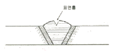
- 언더컷(under cut)
- 피트(pit)
- 오버랩(over lap)
- 슬래그섞임(slag inclusion)
(정답률: 75%)
24. 목재의 무늬나 바탕의 재질을 잘 보이게 하는 도장 방법은?
- 유성페인트 도장
- 에나멜페인트 도장
- 합성수지 페인트 도장
- 클리어 래커 도장
(정답률: 83%)
25. 바닥판, 보밑 거푸집 설계에서 고려하는 하중과 가장 거리가 먼 것은?
- 아직 굳지않은 콘크리트의 중량
- 작업하중
- 충격하중
- 측압
(정답률: 72%)
26. 다음 중 녹막이 칠에 부적합한 도료는?
- 광명단
- 크레오소트유
- 아연분말 도료
- 역청질 도료
(정답률: 78%)
27. 다음 중 유리섬유(glass filber)에 대한 설명으로 옳지 않은 것은?
- 경량이면서 굴곡에 강하다.
- 단위면적에 따른 인장강도는 다르고, 가는 섬유일수록 인장강도는 크다.
- 탄성이 적고 전기절연성이 크다.
- 내화성, 단열성, 내수성이 좋다.
(정답률: 74%)
28. 도장 공사에서의 뿜칠에 대한 설명으로 옳지 않은 것은?
- 큰 면적을 균등하게 도장할 수 있다.
- 뿜칠은 보통 30cm 거리로 칠면에 직각으로 일정속도로 이행한다.
- 뿜칠은 도막두께를 일정하게 유지하기 위해 겹치지 않게 순차적으로 이행한다.
- 뿜칠압력이 낮으면 거칠고, 높으면 칠의 유실이 많다.
(정답률: 75%)
29. 고강도 콘크리트의 배합에 대한 기준으로 옳지 않은 것은?
- 물시멘트비는 50% 이하로 한다.
- 유동화 콘크리트로 할 경우에 슬럼프치는 180mm 이하로 한다.
- 단위수량은 180kg/m3 이하로 하고 소요의 워커빌리티를 얻을 수 있는 범위 내에서 가능한 작게 한다.
- 기상의 변화가 심하거나 동결융해에 대한 대책이 필요한 경우를 제외하고는 공기연행제를 사용하지 않는 것을 원칙으로 한다.
(정답률: 50%)
30. 창문 위에 건너질러 상부에서 오는 하중을 좌우벽으로 전달시키기 위하여 설치하는 보는?
- 기초보
- 인방보
- 토대
- 테두리보
(정답률: 78%)
31. 모래의 전단력을 측정하는 가장 유효한 지반조사 방법은?
- 보링
- 베인테스트
- 표준관입시험
- 재하시험
(정답률: 56%)
32. 유동화콘크리트의 용어 중에서 베이스 콘크리트에 대한 설명으로 옳은 것은?
- 유동화콘크리트 제조 시 유동화제를 첨가하기 전 기본배합의 콘크리트
- 유동화콘크리트를 제조하기 위하여 혼합된 유동화제를 첨가한 후의 콘크리트
- 기초 콘크리트에 타설하기 위해 현장에 반입된 레디믹스트 콘크리트
- 지하층에 콘크리트를 타설하기 위하여 현장에 반입된 레디믹스트 콘크리트
(정답률: 74%)
33. 굴착기계 중 지반보다 3m 정도 높은 곳의 굴착과 5 ~ 6m 전도의 낮은 곳 굴착에 사용되는 굴착기계가 알맞게 조합된 것은?
- 파워 쇼벨(power shovel) - 드래그 쇼벨(drag shovel)
- 클램 쉘(clam shell) - 드래그 라인(drag line)
- 앵글도저(angle dozer) - 스크레이퍼(scraper)
- 그레이더(grader) - 드래그 쇼벨(drag shovel)
(정답률: 85%)
34. 다음 중 사운딩(Sounding)시험에 속하지 않는 시험법은?
- 표준관입시험
- 콘 관입시험
- 베인전단시험
- 평판재하시험
(정답률: 63%)
35. 목재에 사용하는 방부제에 해당되지 않는 것은?
- 크레오소트 유(Creosote oil)
- 콜타르(Coal tar)
- 카세인(Casein)
- P.C.P(Penta Chloro Phenol)
(정답률: 63%)
36. 칠공사에 사용되는 희석제이 분류가 잘못 연결된 것은?
- 송진건류품 - 테레빈유
- 석유건류품 - 휘발유, 석유
- 콜타르 증류품 - 미네랑 스피리트
- 송근건류품 - 송근유
(정답률: 76%)
37. 지하방수에 대한 설명으로 옳지 않은 것은?
- 바깥방수는 깊은 지하실에서 유리하다.
- 바깥방수에는 보통 시트나 아스팔트방수 및 벤토나이트 방수법이 많이 쓰인다.
- 안방수는 시공이 어렵고 보수가 쉽지 않은 단점이 있다.
- 안방수는 시트나 아스팔트 방수보다 액체방수를 많이 활용한다.
(정답률: 78%)
38. 레디믹스트 콘크리트(Ready mixed concrete)를 사용하는 이유로서 옳지 않은 것은?
- 시가지에서는 콘크리트를 혼합할 장소가 좁다.
- 현장에서는 균질인 골재를 얻기 힘들다.
- 콘크리트의 혼합이 충분하여 품질이 고르다.
- 콘크리트의 운반거리 및 운반시간에 제한을 받지 않는다.
(정답률: 82%)
39. TQC를 위한 7가지 도구 중 다음 설명이 의미하는 것은?
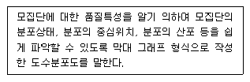
- 히스토그램
- 특성요인도
- 파레토도
- 체크시트
(정답률: 78%)
40. 버킷용량 1.5m3의 파워쇼벨을 이용하여 사이클 타임 1분, 작업효율 100%로 작업할 경우 체적변화계수 1.2인 흙의 시간당 작업량은? (단, 굴삭계수는 0.6)
- 38.88m3
- 64.8m3
- 108.3m3
- 150.4m3
(정답률: 55%)
3과목: 건축구조
41. 건축구조기준(KBC2009)에 따른 강도감소계수 값으로 옳지 않은 것은?
- 인장지배단면 : 0.85
- 압축지배단면 중 나선철근으로 보강된 철근콘크리트부재 : 0.85
- 전단력 및 비틀림모멘트 : 0.75
- 포스트텐션 정착구역 : 0.85
(정답률: 57%)
42. 양단 고정된 기둥은 캔틸레버 기둥(1단고정, 1단자유)보다 몇 배나 큰 오일러(Euler) 좌굴하중을 받을 수 있는가? (단, 두 기둥의 단면크기, 재료, 길이가 동일함)
- 2
- 4
- 8
- 16
(정답률: 48%)
43. 다음 부정정 구조물의 A단의 휨모멘트 값은?
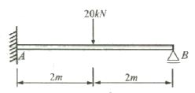
- -15 kNㆍm
- -20 kNㆍm
- -30 kNㆍm
- -40 kNㆍm
(정답률: 41%)
44. 건축구조기준(KBC2009)의 지반의 분류 중 지반종류와 호칭이 옳게 연결된 것은?
- SA: 보통암 지반
- SB: 연암 지반
- SC: 경암 지반
- SD: 단단한 토사 지반
(정답률: 68%)
45. 그림과 같은 양단고정 보에서 A점의 휨모멘트는 얼마인가? (단, 티는 일정)
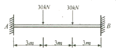
- -40 kNㆍm
- -50 kNㆍm
- -60 kNㆍm
- -70 kNㆍm
(정답률: 63%)
46. 다음과 같은 3힌지 아치의 전단력도(S. F. D)로 알맞은 것은? (단, 전단력도의 +, - 도시위치는 무관)
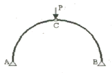
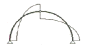
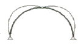
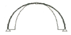
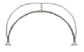
(정답률: 65%)
47. 구조용 간재심부 주위를 띠철근으로 보강한 합성부대의 설계에서 횡방향띠철근에 대한 내용으로 옳지 않은 것은?
- 횡방향띠철근은 구조용 강재심부의 둘레를 완전히 둘러싸야 한다.
- 띠철근의 지름은 합성부재 단면의 가장 긴 변의 1/50배 이상이어야 하지만 D10철근 이하로 하여야 한다.
- 띠철근 대신 등가단면적을 가진 용접철망을 사용할 수 있다.
- 횡방향띠철근의 수직간격은 축방향철근지름이 16배, 띠철근지름의 48배, 합성부재 단면의 최소치수의 1/2배 중에서 가장 작은 값 이하로 하여야 한다.
(정답률: 45%)
48. 다음 중 철골보의 처짐을 적게 하는 방법으로 가장 알맞은 것은?
- 철골보의 길이를 길게 한다.
- 웨브의 단면적을 작게 한다.
- 상부플랜지의 두께를 줄인다.
- 단면2차모멘트 값을 크게 한다.
(정답률: 71%)
49. 그림에서 점 B에서의 처짐각(θB)은? (단, EI는 일정함)
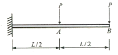
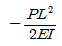
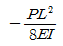
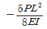
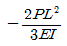
(정답률: 61%)
50. 그림과 같은 직사각형 단면을 가지는 보에 최대 휨모멘트 M=20kNㆍm가 작용할 때 최대 휨응력은?
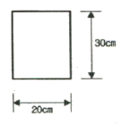
- 3.33 MPa
- 4.44 MPa
- 5.56 MPa
- 6.67 MPa
(정답률: 52%)
51. 강도설계법에서 압축 이형철근 D22의 기본정착길이는 약 얼마인가? (단, D22 철근의 단면적은 387mm2, 콘크리트의 압축강도는 24MPa, 철근의 항복강도는 400MPa)
- 400 mm
- 450 mm
- 500 mm
- 550 mm
(정답률: 66%)
52. 철골조의 설계에 관한 설명 중 옳지 않은 것은?
- 압축재에서는 볼트구멍에 의한 단면 결손을 고려하지 않는다.
- 인장재의 설계에 있어서는 폭두께비를 고려하지 않는다.
- 공칭인장강도는 세장비와 무관하게 결정된다.
- 보의 집중하중이 작용하는 곳에 수평 스티프너를 설치한다.
(정답률: 37%)
53. 그림과 같은 단순보에서 지점 A의 수직반력 값은?
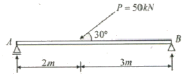
- 100kN
- 15kN
- 20kN
- 25kN
(정답률: 56%)
54. 고력볼트 F10T-M24의 현장시공을 위한 2차 조임토크 값은 얼마인가? (단, 토크계수는 0.13, F10T-M24볼트의 설계볼트장력은 200kN이며 표준볼트장력은 설계볼트장력에 10%를 할증한다.)
- 568,573 Nㆍmm
- 686,400 Nㆍmm
- 799,656 Nㆍmm
- 892,638 Nㆍmm
(정답률: 49%)
55. 그림과 같은 정정라멘에서 E-C간의 전단력의 크기는?
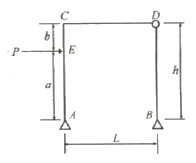
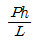
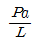
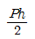
- 0
(정답률: 58%)
56. H형강이 사용된 압축재의 양단이 핀으로 지지되고 부재중간에서 x축 방향으로만 이동할 수 없도록 지지되어 있다. 부재의 전 길이가 4m일 때 세장비는? (단, rx=8.62cm, ry=5.02cm 임)
- 26.4
- 36.4
- 46.4
- 56.4
(정답률: 58%)
57. 다음 트러스 구조물의 안정성 및 정정 여부는?
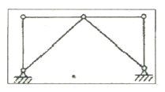
- 불안정, 정정
- 안정, 정정
- 안정, 1차 부정정
- 불안정, 1차 부정정
(정답률: 60%)
58. 일정한 두께를 가진 긴 수직벽체가 건축계획적으로 공간을 분할하는 역할을 함과 동시에 횡력 및 중력에 대하여 저항하는 역할을 하는 시스템은?
- 튜브 시스템
- 전단벽 시스템
- 모멘트 연성골조 시스템
- 다이아그리드 시스템
(정답률: 51%)
59. 다음 그림과 같은 구멍 2열에 대하여 파단선 A-B-C를 지나는 순단면적과 동일한 순단면적을 갖는 파단선 D-E-F-G의 피치(s)는?(단, 구멍은 여유폭을 포함하여 23mm임)
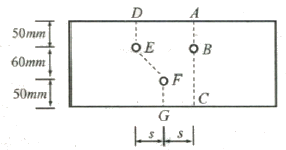
- 3.72 cm
- 7.43 cm
- 11.16 cm
- 14.88 cm
(정답률: 54%)
60. 강재 SM 490A에 대한 설명 중 옳지 않은 것은?(오류 신고가 접수된 문제입니다. 반드시 정답과 해설을 확인하시기 바랍니다.)
- SM은 용접구조용 강재임을 의미한다.
- 기호의 끝 알파벳은 충격흡수 에너지 시험 보증값에 따라 규정된다.
- 기호의 끝 알파벳은 A<B<C의 순으로 용접성이 양호함을 의미한다.
- 최저 항복강도가 490N/mm2임을 나타낸다.
(정답률: 39%)
4과목: 건축설비
61. 저압옥내 배선공사 중 콘크리트에 매설할 수 있는 공사는?
- 금속관공사
- 금속덕트공사
- 버스덕트공사
- 금속몰드공사
(정답률: 75%)
62. 증기난방에 관한 설명으로 옳지 않은 것은?
- 온수난방에 비해 예열시간이 짧다.
- 온수난방에 비해 한랭지에서 동결의 우려가 적다.
- 온수난방에 비해 열용량이 크므로 간헐운전에는 부적합하다.
- 온수난방에 비해 부하변동에 따른 실내방열량의 제어가 곤란하다.
(정답률: 71%)
63. 전기설비가 어느 정도 유효하게 사용되는가를 나타내며, 최대수용전력에 대한 부하의 평균전력의 비로 표현되는 것은?
- 부하율
- 부등율
- 수용율
- 유효율
(정답률: 65%)
64. 에스컬레이터에 관한 설명으로 옳지 않은 것은?
- 기계실이 필요하지 않으며 피트가 간단하다.
- 수송능력이 엘리베이터의 약 10배 정도이다.
- 기다리는 시간 없이 연속적으로 승객을 수송할 수 있다.
- 정격 속도는 하강방향을 고려하여 60m/min 정도가 가장 바람직하다.
(정답률: 79%)
65. 습공기의 건구온도와 습구온도를 알 때 습공기선도를 사용하여 구할 수 있는 것이 아닌 것은?
- 기류
- 엔탈피
- 상대습도
- 절대습도
(정답률: 73%)
66. 평균조도의 계산과 관련하여, 면적을 A, 사용램프의 저광속을 F, 조명률을 U, 보수율은 M, 평균조도를 E라고 할 때 성립하는 식은?
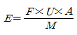
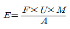
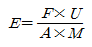
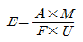
(정답률: 75%)
67. 배관재료에 관한 설명으로 옳지 않은 것은?
- 주철관은 오배수관이나 지중 매설 배관에 사용된다.
- 경질염화비닐관은 내식성은 우수하나 충격에 약하다.
- 연관은 내식성이 작아 배수용 보다는 난방배관에 주로 사용된다.
- 동관은 전기 및 열전도율이 좋고 전성ㆍ연성이 풍부하며 가공도 용이하다.
(정답률: 60%)
68. 100[V], 500[W]의 전열기를 90[V]에서 사용 할 경우 소비전력은?
- 200[W]
- 310[W]
- 4⑤[W]
- 420[W]
(정답률: 77%)
69. 공기조화방식 중 팬코일 유닛방식에 관한 설명으로 옳지 않은 것은?
- 덕트 방식에 비해 유닛의 위치 변경이 용이하다.
- 유닛을 창문 밑에 설치하면 콜드 드래프트를 줄일 수 있다.
- 각 실의 유닛은 수동으로도 제어할 수 있으며 개별제어가 용이하다.
- 송풍기에 의해 공기를 이송하므로 펌프에 의한 냉ㆍ온수의 이송동력보다 적게 든다.
(정답률: 59%)
70. 냉방부하 중 헌열부하로망 작용하는 것은?
- 인체부하
- 외기부하
- 조명기구부하
- 틈새바람에 의한 부하
(정답률: 58%)
71. 가스배관 경로 선정시 주의하여야 할 사항으로 옳지 않은 것은?
- 옥내배관은 매립하여 견고하게 한다.
- 장래의 증설 및 이설 등을 고려한다.
- 주요구조부를 관통하지 않도록 한다.
- 손상이나 부식 및 전식을 받지 않도록 한다.
(정답률: 81%)
72. 다음 설명에 알맞은 급수 방식은?
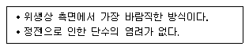
- 수도직결방식
- 고가수조방식
- 압력수조방식
- 펌프직송방식
(정답률: 75%)
73. 로프식 엘리베이터와 유압식 엘리베이터를 비교할 경우, 유압식 엘리베이터의 장점으로 옳은 것은?
- 전동기의 출력이 작다.
- 기계실의 위치가 자유롭다.
- 기계실의 발열량이 작다.
- 속도의 범위가 자유롭다.
(정답률: 72%)
74. 실내 CO2 발생량이 17L/h, 실내 CO2 허용농도가 0.1%, 외기의 CO2 농도가 0.04% 일 경우 필요 환기량은?
- 약 42.5m3/h
- 약 40.3m3/h
- 약 35.0m3/h
- 약 28.3m3/h
(정답률: 60%)
75. 내경이 20cm인 관내를 유속 1.2m/s의 물이 흐르고 있을 때 유량은 얼마인가?
- 0.028m3/s
- 0.038m3/s
- 0.048m3/s
- 0.⑤8m3/s
(정답률: 58%)
76. 다음 설명에 알맞은 취출구의 종류는?
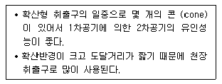
- 팬형
- 노즐형
- 아네모스탯형
- 브리즈라인형
(정답률: 54%)
77. 다음 중 배수 트랩에 속하지 않는 것은?
- S트랩
- 벨트랩
- 드럼트랩
- 버킷트랩
(정답률: 47%)
78. 오수의 BOD 제거율이 95%인 정화조에서 정화조로 유입되는 오수의 BOD 농도가 300ppm일 경우, 방류수의 BOD 농도는?
- 15ppm
- 85ppm
- 150ppm
- 285ppm
(정답률: 68%)
79. 기온ㆍ습도ㆍ기류의 3요소의 조합에 의한 실내 온열감각을 기온의 척도로 나타낸 것은?
- 유효온도
- 등가온도
- 작용온도
- 불쾌지수
(정답률: 63%)
80. 변압기의 1차측 코일의 권수가 6000, 2차측 코일의 권수가 200 일 때 1차측 코일에 교류전압 3000[V] 인가시 2차측 코일에 발생하는 교류전압[V]은?
- 50
- 100
- 200
- 500
(정답률: 69%)
5과목: 건축법규
81. 다음은 기존의 건축물에 대한 안전점검 및 시정명령 등에 관한 기준 내용이다. ( )안에 알맞은 용어는?(관련 규정 개정전 문제로 여기서는 기존 정답인 1번을 누르면 정답 처리됩니다. 자세한 내용은 해설을 참고하세요.)
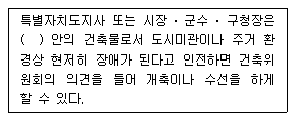
- 미관지구 또는 경관지구
- 고도지구 또는 미관지구
- 방화지구 또는 고도지구
- 경관지구 또는 방화지구
(정답률: 75%)
82. 건축물의 대지는 원칙적으로 최소 얼마 이상이 도로에 접하여야 하는가? (단, 자동차만의 통행에 사용되는 도로는 제외)
- 1m
- 2m
- 3m
- 4m
(정답률: 77%)
83. 국토의 계획 및 이용에 관한 법령상 광장의 세분에 해당하지 않는 것은?
- 근린광장
- 일반광장
- 지하광장
- 교통광장
(정답률: 47%)
84. 다음 중 주차장법령상 기계식 주차장에 해당하지 않는 것은?
- 지하식
- 지평식
- 건축물식
- 공작물식
(정답률: 75%)
85. 다음과 같은 대지의 대지면적은?
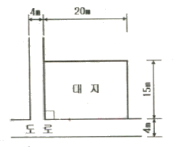
- 294m2
- 296m2
- 298m2
- 300m2
(정답률: 48%)
86. 주거지역의 세분에서 단독주택 중심의 양호한 주거환경을 보호하기 위하여 필요한 지역은?
- 제1종 전용주거지지역
- 제2종 전용주거지지역
- 제1종 일반주거지지역
- 제2종 일반주거지지역
(정답률: 77%)
87. 건축법령상 고층건축물의 정의로 옳은 것은?
- 층수가 20층 이상이거나 높이가 80미터 이상인 건축물
- 층수가 30층 이상이거나 높이가 120미터 이상인 건축물
- 층수가 40층 이상이거나 높이가 160미터 이상인 건축물
- 층수가 50층 이상이거나 높이가 200미터 이상인 건축물
(정답률: 81%)
88. 다음의 노외주차장의 구조ㆍ설비에 관한 기준 내용 중 ( )안에 알맞은 것은?
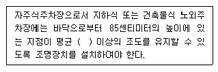
- 50 럭스
- 60 럭스
- 70 럭스
- 80 럭스
(정답률: 32%)
89. 장애인 전용의 주차장 주차단위구획의 최소 길이는? (단, 평행주차형식 외의 경우)
- 3.6m
- 4.5m
- 5.0m
- 6.0m
(정답률: 60%)
90. 피난층 외의 층이 지하층으로서 그 층 거실의 바닥면적의 합계가 최소 얼마 이상인 경우 피난층 또는 지상으로 통하는 직통계간을 2개소 이상 설치하여야 하는가?
- 150m2
- 200m2
- 300m2
- 400m2
(정답률: 42%)
91. 국토해양부장과니 국토관리를 위하여 건축허가를 제한하는 경우, 제한기간은 최대 몇 년 이내인가?
- 1년
- 2년
- 3년
- 4년
(정답률: 54%)
92. 용도별 건축물의 연결이 옳지 않은 것은?
- 단독주택- 공관
- 공동주택 - 기숙사
- 관광휴게시설 - 야외음악당
- 문화 및 집회시설 - 휴양콘도미니엄
(정답률: 60%)
93. 건축물의 높이 산정시 조건과 상관없이 건축물의 높이에 산입하지 않는 것은?
- 망루
- 난간벽
- 장식탑
- 굴뚝의 옥상돌출부
(정답률: 59%)
94. 승용승강기 설치대상 건축물로서 6층 이상의 거실면적의 합계가 6000m2인 경우, 승용승강기의 최소 설치대수가 가장 많은 것부터 적은 순으로 올바르게 나열된 것은? (단, 8인승 승강기의 경우)
- 병원 > 숙박시설 > 공동주택
- 공연장 > 위락시설 > 도매시장
- 집회장 > 공동주택 > 업무시설
- 공동주택 > 관람장 > 위락시설
(정답률: 67%)
95. 다음의 시가회조정구역의 지정과 관련된 기준 내용 중 밑줄 친 “대통령령으로 정하는 기간” 으로 옳은 것은?
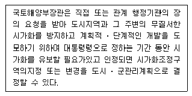
- 3년 이상 10년 이내의 기간
- 3년 이상 20년 이내의 기간
- 5년 이상 10년 이내의 기간
- 5년 이상 20년 이내의 기간
(정답률: 75%)
96. 방화구획의 설치기준상 10층 이하의 층은 바닥면적 최대 얼마 이내마다 구획하여야 하는가? (단, 스프링클러 기타 이와 유사한 자동식 소화설비를 설치하지 않은 경우)
- 200m2
- 600m2
- 1000m2
- 3000m2
(정답률: 55%)
97. 비상용승강기의 승강장 및 승강로의 구조에 관한 기준 내용으로 옳지 않은 것은?
- 승강로는 당해 건축물의 다른 부분과 내화구조로 구획 할 것
- 각층으로부터 피난층까지 이르는 승강로를 단일구조로 이르는 거리가 50m 이하일 것
- 피난층이 있는 승강장의 출입구로부터 도로 또는 공지에 이르는 거리가 50m 이하일 것
- 옥내에 설치하는 승강장의 바닥면적은 비상용승강기 1대에 대하여 6m2 이상으로 할 것
(정답률: 51%)
98. 그림과 같은 거실의 평균 반자 높이는?
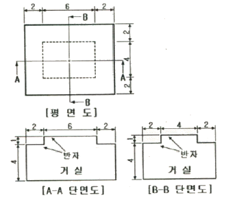
- 5.0m
- 4.6m
- 4.5m
- 4.3m
(정답률: 59%)
99. 국토의 계획 및 이용에 관한 법률상 도시ㆍ군기본계획에 포함되어야 하는 사항에 해당하지 않는 것은? (단, 그 밖에 대통령령으로 정하는 사항 제외)
- 공원ㆍ녹지에 관한 사항
- 토지의 이용 및 개발에 관한 사항
- 토지의 용도별 수요 및 공급에 관한 사항
- 광역계획권의 공간 구조와 기능 분담에 관한 사항
(정답률: 65%)
100. 건축물에 설치하는 굴뚝에 관한 기준 내용으로 옳지 않는 것은?
- 굴뚝의 옥상 돌출부는 지붕면으로부터의 수직거리를 1m 이상으로 하는 것이 원칙이다.
- 굴뚝의 상단으로부터 수평거리 1m 이내에 다른 건축물이 있는 경우에는 그 건축물의 처마보다 1m 이상 높게 하여야 한다.
- 급속제 굴뚝은 목재 기타 가연재료로부터 최소 1m 이상 떨어져서 설치하여야 한다.
- 금속제 굴뚝으로서 건축물의 지붕속ㆍ반자위 및 가장 아랫바닥밑에 있는 굴뚝의 부분은 급속외의 불연재료로 덮어야 한다.
(정답률: 43%)